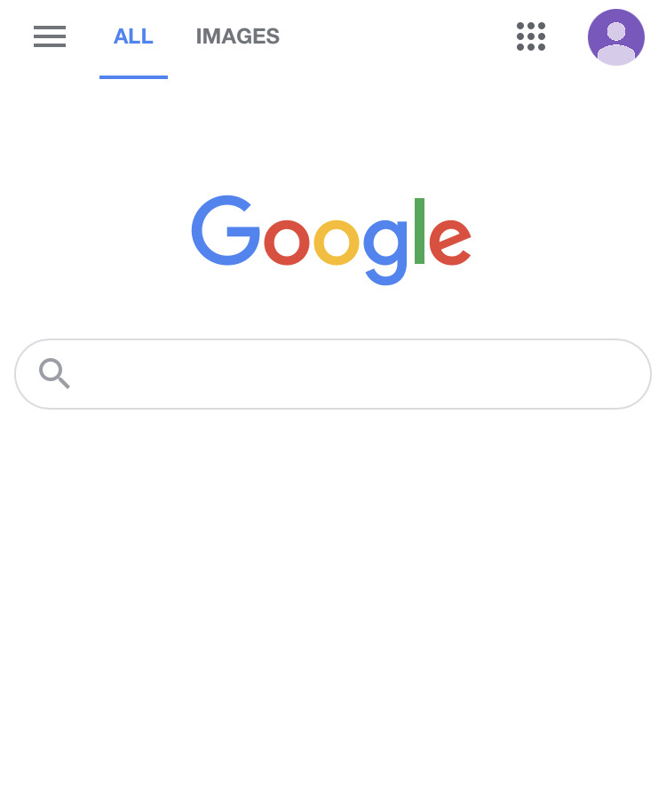

White Space and Clean Design

Google displays a simple and clean website. There is a lot of white space to draw the visitor to the main purpose of the search engine.
Google displays a simple and clean website. There is a lot of white space to draw the visitor to the main purpose of the search engine.
T-Mobile's website displays bold white content in front of the pink background to immediately draw the visitor to begin reading what they have to offer.
Camera Ads is a local selling and buying vehicle website. The website displays a simple way to select a vehicle. The visitor is able to filter to specific needs and desires, thus making it an easy selection process.